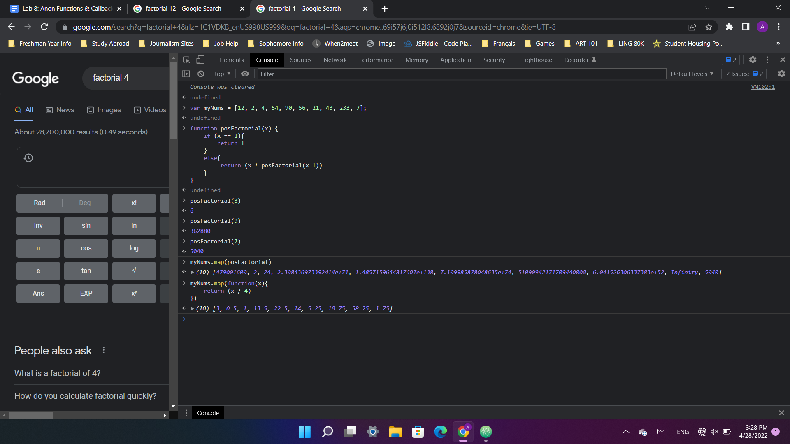

This week we were challenged to write a named function that maped a function onto every element of an array and then do the same with an anonymous function. We then had to use the concept of callbacks to print the results of our script into our HTML page, while keeping in mind that JavaScript is an asynchronous language.
My partner and I struggled to get document.getElementById() to work. We discovered that it returned null if it was put inside of a function and then called by a button. We figured out that this was due to the asynchronous nature of JavaScript. The element we were trying to retreive was not loaded yet when our code was running. We had to use a callback function in order to make our scripts wait for the page to be loaded. I'm sure there's another, cleaner way to do this that doesn't require button input, but this works for now.
Here are my results. Clicking this button activates my javascript which uses callbacks and anonymous functions to apply changes to every element of an array.
I tested the code that produced the output above in the console first.
Testing anon functions and callbacks in the console